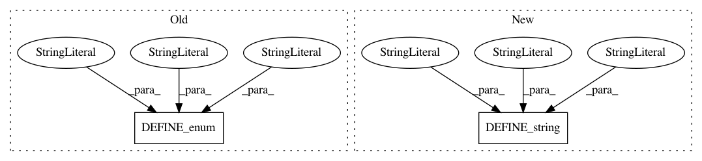

8c8fc0c2f42e1b849157b904da7c22fa4f672fc1,object_detection/create_pascal_tf_record.py,,,#,40
Before Change
flags = tf.app.flags
flags.DEFINE_string("data_dir", "", "Root directory to raw PASCAL VOC dataset.")
flags.DEFINE_enum("set", "train", ["train", "val", "trainval", "test"],
"Convert training set, validation set or merged set.")
flags.DEFINE_string("annotations_dir", "Annotations",
"(Relative) path to annotations directory.")
flags.DEFINE_enum("year", "VOC2007", ["VOC2007", "VOC2012", "merged"],
"Desired challenge year.")
After Change
"merged set.")
flags.DEFINE_string("annotations_dir", "Annotations",
"(Relative) path to annotations directory.")
flags.DEFINE_string("year", "VOC2007", "Desired challenge year.")
flags.DEFINE_string("output_path", "", "Path to output TFRecord")
flags.DEFINE_string("label_map_path", "data/pascal_label_map.pbtxt",
"Path to label map proto")
flags.DEFINE_boolean("ignore_difficult_instances", False, "Whether to ignore "
In pattern: SUPERPATTERN
Frequency: 3
Non-data size: 2
Instances
Project Name: tensorflow/models
Commit Name: 8c8fc0c2f42e1b849157b904da7c22fa4f672fc1
Time: 2017-06-16
Author: rathodv@google.com
File Name: object_detection/create_pascal_tf_record.py
Class Name:
Method Name:
Project Name: google-research/google-research
Commit Name: 690acfdf4eabb502da80b9bdc4aa5aec63fc0262
Time: 2021-01-18
Author: barron@google.com
File Name: jaxnerf/nerf/utils.py
Class Name:
Method Name: define_flags
Project Name: tensorflow/models
Commit Name: 8d91ce765a81ac596e6f8781bbdc75a0f419a65d
Time: 2017-06-16
Author: vivekmrathod@gmail.com
File Name: object_detection/create_pascal_tf_record.py
Class Name:
Method Name: